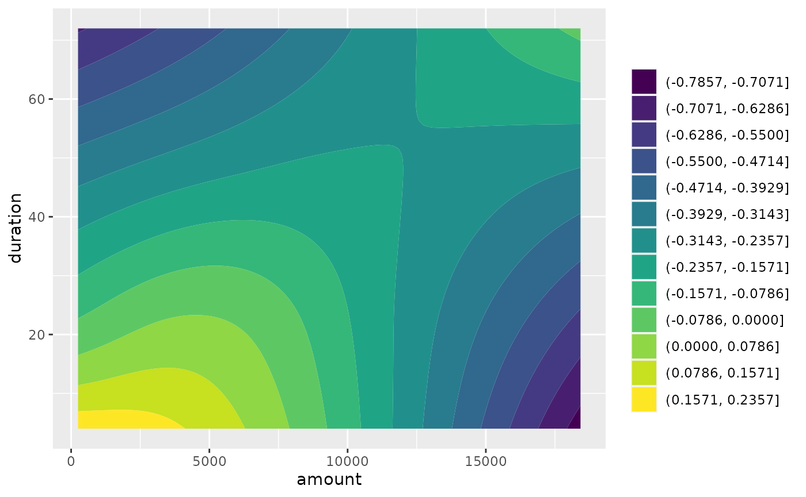
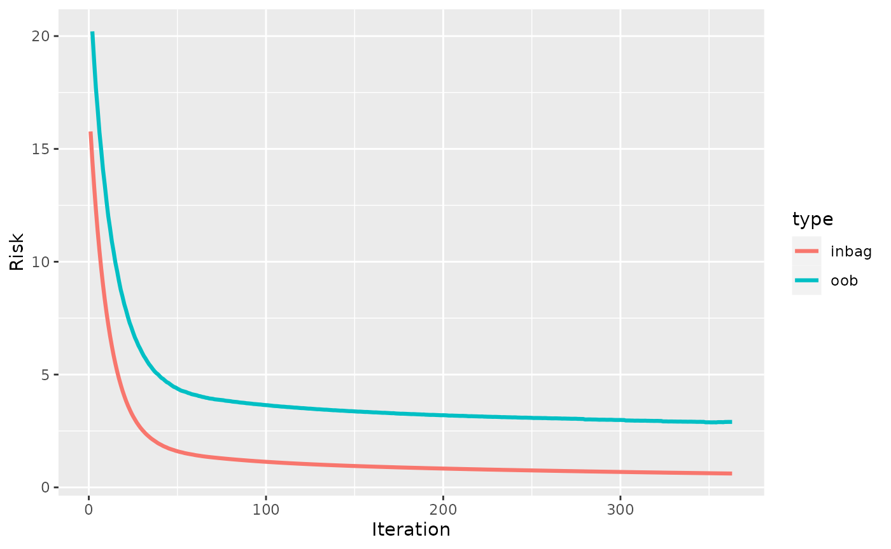
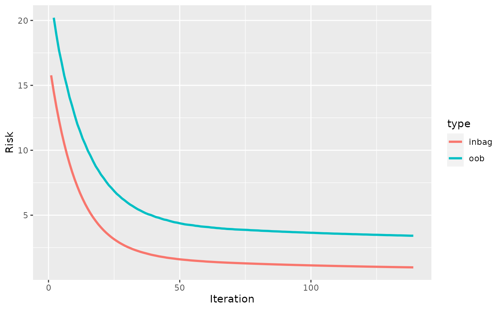

mlr3 learners
basic-mlr-learners.Rmd[Compboost] contains two mlr3 learners
for regression regr.compboost and binary classification
classif.compboost. See https://mlr3.mlr-org.com/ For an
introduction to mlr3. Here, we show the two learners in
small examples.
Regression
As task, we use the Boston housing task that is accessible via
tsk("boston_housing"):
library(mlr3)
task = tsk("boston_housing")
task
#> <TaskRegr:boston_housing> (506 x 19): Boston Housing Prices
#> * Target: medv
#> * Properties: -
#> * Features (18):
#> - dbl (13): age, b, cmedv, crim, dis, indus, lat, lon, lstat, nox,
#> ptratio, rm, zn
#> - int (3): rad, tax, tract
#> - fct (2): chas, townThe key regr.compboost gives the regression learner:
lcb = lrn("regr.compboost")
lcb$param_set
#> <ParamSet>
#> id class lower upper nlevels default parents value
#> 1: baselearner ParamFct NA NA 3 spline spline
#> 2: bin_root ParamInt 0 Inf Inf 0
#> 3: degree ParamInt 1 Inf Inf 3 baselearner
#> 4: df ParamDbl 1 Inf Inf 5 5
#> 5: df_cat ParamDbl 1 Inf Inf 2 2
#> 6: differences ParamInt 1 Inf Inf 2 baselearner
#> 7: early_stop ParamLgl NA NA 2 FALSE FALSE
#> 8: eps_for_break ParamDbl -Inf Inf Inf 0 early_stop
#> 9: interactions ParamUty NA NA Inf
#> 10: iterations ParamInt 1 Inf Inf 100 100
#> 11: just_interactions ParamLgl NA NA 2 FALSE FALSE
#> 12: learning_rate ParamDbl 0 Inf Inf 0.05
#> 13: loss ParamUty NA NA Inf
#> 14: loss_oob ParamUty NA NA Inf early_stop
#> 15: n_knots ParamInt 1 Inf Inf 20 baselearner
#> 16: oob_fraction ParamDbl 0 1 Inf 0.3
#> 17: optimizer ParamUty NA NA Inf
#> 18: patience ParamInt 1 Inf Inf 5 early_stop
#> 19: show_output ParamLgl NA NA 2 FALSE FALSE
lcb$train(task)
lcb$model
#>
#>
#> Component-Wise Gradient Boosting
#>
#> Target variable: medv
#> Number of base-learners: 18
#> Learning rate: 0.05
#> Iterations: 100
#>
#> Offset: 22.5328
#>
#> LossQuadratic: L(y,x) = 0.5 * (y - f(x))^2The most important features of Compboost can be
controlled via the parameters. For example, using early stopping
requires to set the value oob_fraction to a number bigger
than 0. Just in this case, the learner can be trained with early
stopping:
lcb = lrn("regr.compboost", early_stop = TRUE)
lcb$train(task)
#> Error in get_private(learner)$.train(task): `oob_fraction > 0` required for early stopping.
lcb = lrn("regr.compboost", oob_fraction = 0.3, early_stop = TRUE)
lcb$train(task)
head(lcb$model$logs)
#> _iterations oob_risk time baselearner train_risk
#> 1 0 NA NA intercept 39.36244
#> 2 1 44.03853 0 cmedv_spline 35.54241
#> 3 2 39.74318 272 cmedv_spline 32.09482
#> 4 3 35.86748 509 cmedv_spline 28.98338
#> 5 4 32.37046 740 cmedv_spline 26.17530
#> 6 5 29.21515 974 cmedv_spline 23.64101Binary classification
Binary classification works in the same way. We use the
spam data set for the demo:
task = tsk("spam")
task
#> <TaskClassif:spam> (4601 x 58): HP Spam Detection
#> * Target: type
#> * Properties: twoclass
#> * Features (57):
#> - dbl (57): address, addresses, all, business, capitalAve,
#> capitalLong, capitalTotal, charDollar, charExclamation, charHash,
#> charRoundbracket, charSemicolon, charSquarebracket, conference,
#> credit, cs, data, direct, edu, email, font, free, george, hp, hpl,
#> internet, lab, labs, mail, make, meeting, money, num000, num1999,
#> num3d, num415, num650, num85, num857, order, original, our, over,
#> parts, people, pm, project, re, receive, remove, report, table,
#> technology, telnet, will, you, yourThen, the usual methods and fields are accessible:
Using compboost in parallel
The parallel execution in compboost is controlled by the
optimizers. With mlr3, optimizers can defined in the
construction of the learner. Thus, if compboost should be run in
parallel, define an optimizer in advance and use it in the
construction:
lcb$timings["train"]
#> train
#> 4.099
lcb_2c = lrn("classif.compboost", iterations = 500L, optimizer = OptimizerCoordinateDescent$new(2))
lcb_2c$train(task)
lcb_2c$timings["train"]
#> train
#> 2.327Using different losses
As for the parallel execution, losses can be defined by the
loss parameter value in the construction:
task = tsk("boston_housing")
lcb_quantiles = lrn("regr.compboost", loss = LossQuantile$new(0.1))
lcb_quantiles$train(task)
lcb_quantiles$predict(task)
#> <PredictionRegr> for 506 observations:
#> row_ids truth response
#> 1 24.0 13.94270
#> 2 21.6 13.88014
#> 3 34.7 13.76084
#> ---
#> 504 23.9 13.94210
#> 505 22.0 13.89905
#> 506 11.9 13.62323Adding interactions
Interactions can be added in the constructor by specifying a
data.frame with columns feat1 and
feat2. For each row, one row-wise tensor product base
learner is added to the model:
task = tsk("german_credit")
ints = data.frame(feat1 = c("age", "amount"), feat2 = c("job", "duration"))
ints
#> feat1 feat2
#> 1 age job
#> 2 amount duration
set.seed(31415)
l = lrn("classif.compboost", interactions = ints)
l$train(task)
l$importance()
#> baselearner risk_reduction
#> 2 status_ridge 0.02703527
#> 1 amount_duration_tensor 0.01305659
plotTensor(l$model, "amount_duration_tensor")
Use early stopping
Early stopping is also controlled by the constructor. Use
early_stop = TRUE to use early stopping with the default
values patience = 5 and eps_for_break = 0 (see
?LoggerOobRisk). In compboost, early stopping
requires a validation set and hence to set
oob_fraction > 0:
task = tsk("mtcars")
set.seed(314)
l = lrn("regr.compboost", early_stop = TRUE, oob_fraction = 0.3, iterations = 1000)
l$train(task)
plotRisk(l$model)
A more aggressive early stopping is achieved by setting
patience = 1:
set.seed(314)
l = lrn("regr.compboost", early_stop = TRUE, oob_fraction = 0.3, iterations = 1000,
patience = 1)
l$train(task)
plotRisk(l$model)
Though, this is not recommended as it can stop too early without
reaching the best validation risk. Note that
oob_fraction > 0 must be true to use early stopping:
l = lrn("regr.compboost", early_stop = TRUE)
l$train(task)
#> Error in get_private(learner)$.train(task): `oob_fraction > 0` required for early stopping.